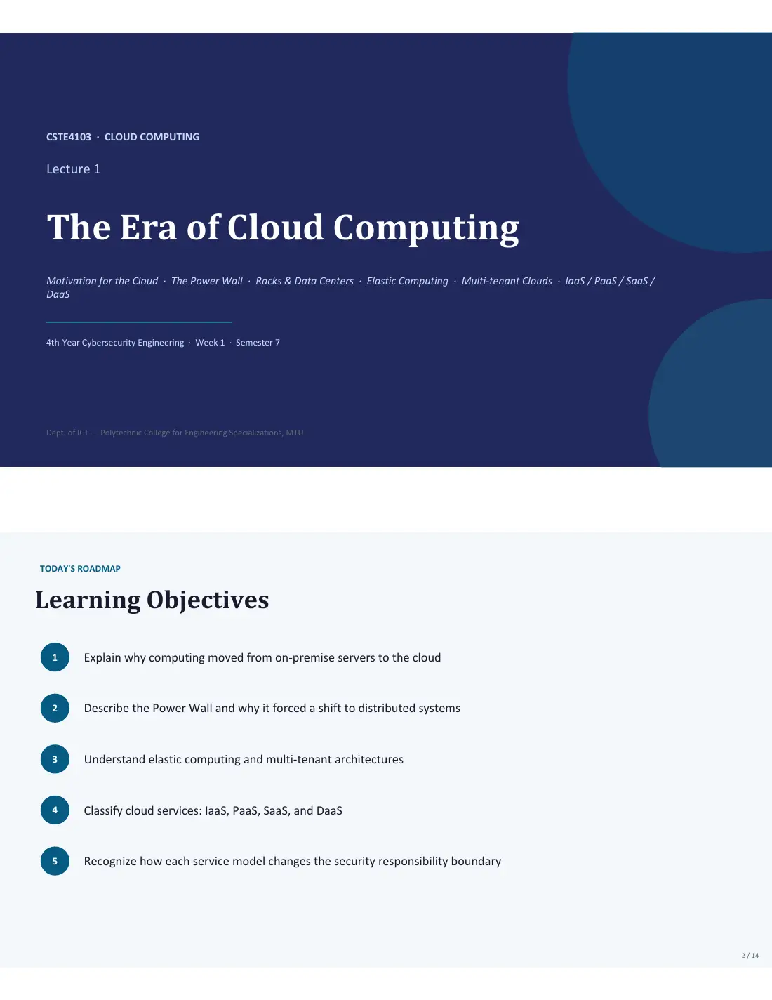
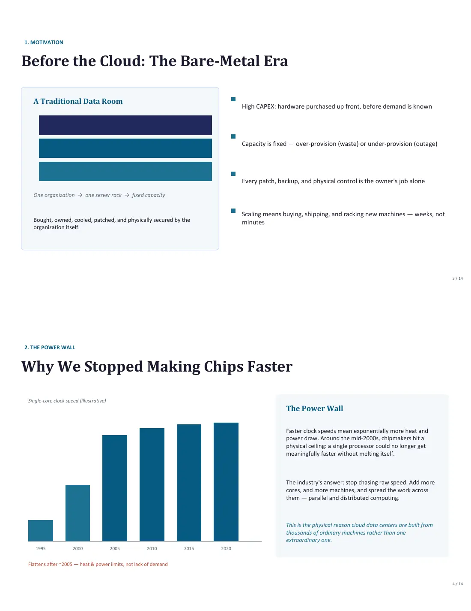
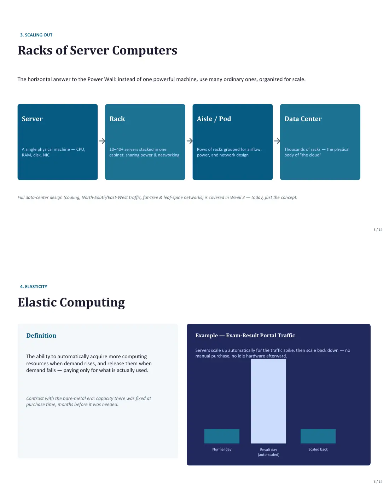
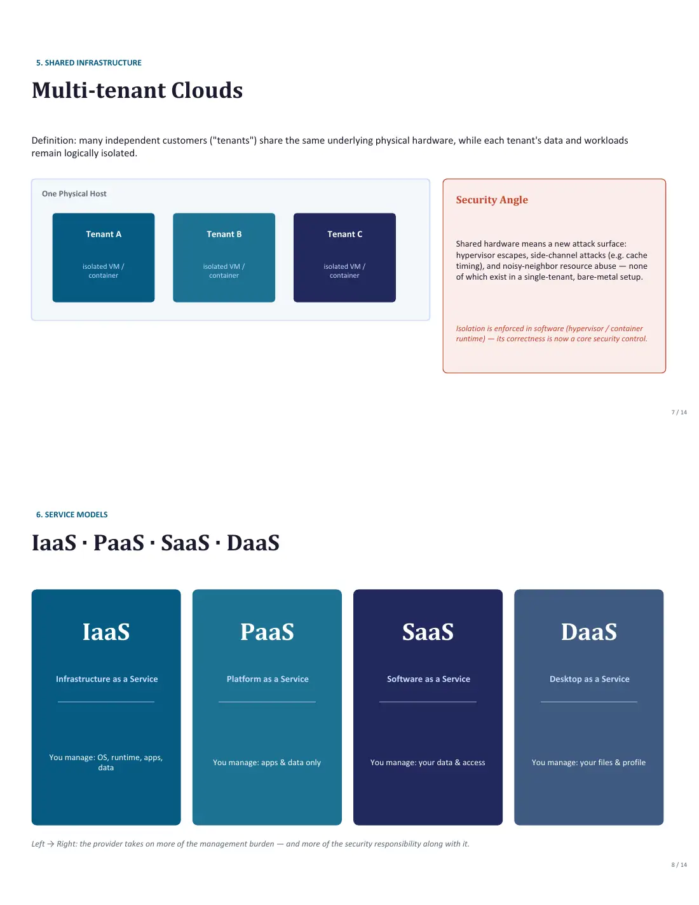
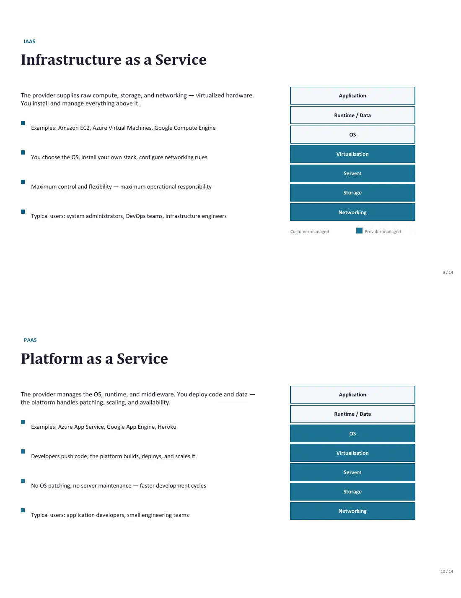
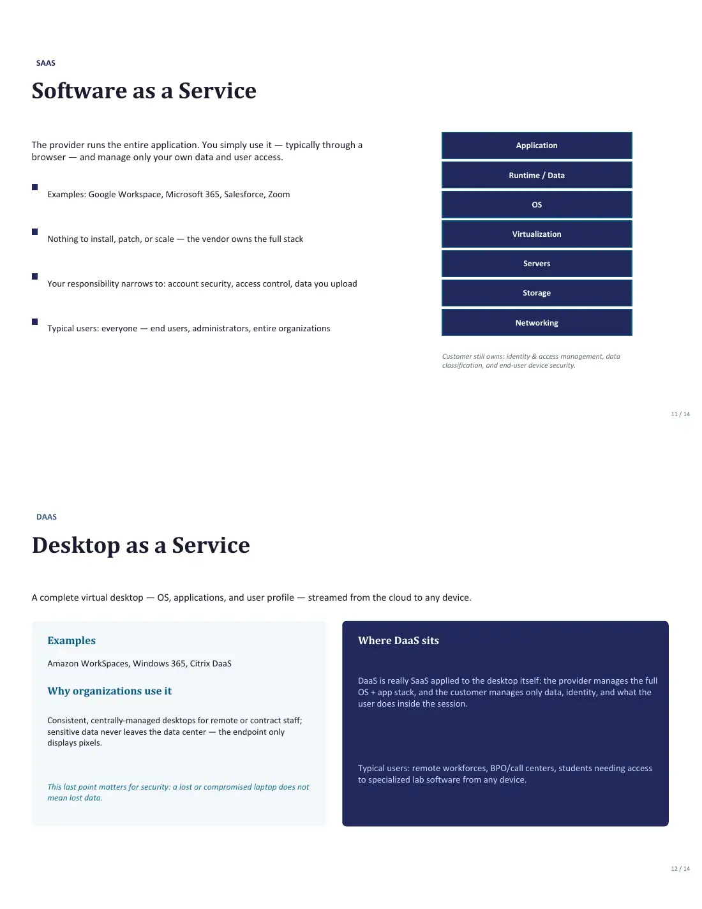
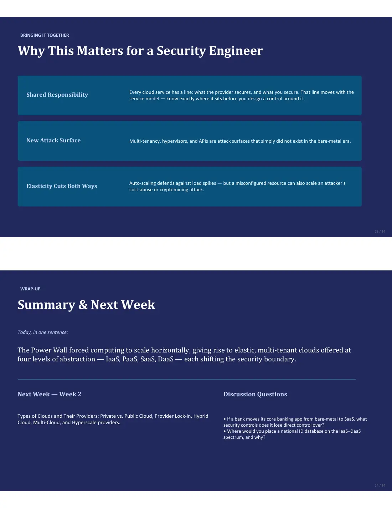

In exam7 pages · 143 KB Open original PDF ↗
Σ Read the summary: الغيوم في حوسبة القومDefinitions, Q/ questions and comparison tables ✎ Take the mock exam for this lectureTimed, sectioned like the real exam, with model answers and marks





